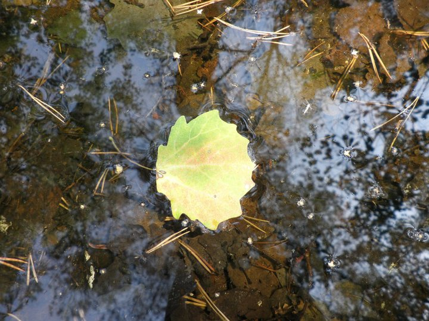

Background and pictures
This page will describe how to add a background picture to your webpage, like the one you´re seeing here.
CSS Background property
Background is a CSS style property that is not directly a part of the contents of the page, and does not need to take place from other elements, but has them placed on top of it. Background pictures and colors can be added to many elements; body, paragraphs, div elements etc., and sometimes HTML, in which case you can add a background to the body, and make the picture show up as a frame behind the color.
Background image
This page has a background picture defined as a path to the file in the background-image property. In this case, the picture is located in a folder called images, so the path looks like this: background-image: url("../images/Nature.jpg");
- Many HTML elements can have background picture.
- This list is one example.
- The background position is set to left here, to make it show more of the light-green part of the picture. Read more about that under the heading background-position.
Background repeat
Background-repeat specifies how many times the picture should be repeated. The default is repeat, which this page uses, in order to make the background cover the whole page. In this case, it needs to be repeated vertically, but is already wide enough horizontally. If you set the background to no-repeat, the picture will just cover a small part of the page. You can also set it to repeat-x, to repeat the picture only horizontally, and repeat-y, to repeat it only vertically.
Background-attachment
On this page, the text moves over a fixed background picture. This can be achieved with the Background-attachment property, which is set to fixed to get this effect. The default is scroll, in which case the background picture would move with the text.
Background color
The default paragraphs on this page have a khaki-colored background, which illustrates the background color property. This, too, can be attached to many elements. This paragraph has a greenyellow color attached to this specific <p> tag.
Background position
You can specify the position of your chosen background image by setting the background-position property. The background image of the body of this page is set to center, to make it symmetric. This paragraph has a background-image with a background-position set to left, in order to make the darker color show more. You can also set it to left, right, top or bottom. Like the image inside this paragraph, which I have decided to place on the left to show the shadowy part more.
How to style an image element
So far we have seen how to use pictures as a background styling element. Now we´re going to look at how to style a picture that is part of the contents of the page - an HTML img element.
The difference with this picture compared to the previous is that it is part of the contents of the body
and in this case, even contained in a paragraph. You would probably want to write something about it in the
surrounding text(for now though, we will let the picture speak for itself, and proceed with CSS).
This gives you the problem how to relate the image to the text. There are different options for that, as we
will see.
This is the default way of handling the problem.
This is another way of handling it.
It is achieved by setting the display to block, he left and right margin to auto, and the size to 50%.
The next image is a polaroid/card presentation in a div container.
This picture has opacity 50 %, which is why it is half transparent. It is div in a figure element with the text around it.
This is also some text. This is also some text. This is also some text. This is also some text. This is also some text. This is also some text.
This is some text. This is some text. This is some text. This is some text. This is some text. This is some text.
There are many ways of styling pictures, and you can add more effects with box-shadow, for example. These pictures are just a fex examples of how you can use CSS to style your picture. There are many ways of styling pictures, and you can add more effects with box-shadow, for example. There are lots of good resources online, and W3Schools can be a good place to start.